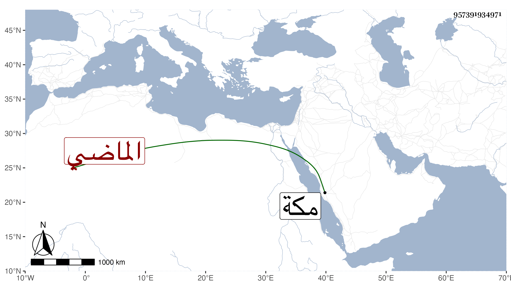

0902Sakhawi.DawLamic.ITO20230111-ara1.EIS1600.957391934971
Biography ID: 957391934971
61
بديعة ابنة السيد نور الدين أحمد بن الصفي عبد الرحمن الايجبي الماضي أبوها وجدها وهي سبطة المولي سعد الدين سعد بن نظام الكازروني الماضي . ولدت سنة خمس وأربعين وثمانمائة وتعلمت الكتابة وتزوجت بابن عمتها السيد عبيد الله ابن العلاء محمد بن عفيف الدين أخي الصفي جدها واستولدها أولادا ، وقطنت مكة على عبادة واستقامة وملازمة لترك ما يأتي من بجبيلة كآل بيتها ، وقد جاورناها مدة فحمدناها ومات لها ولد فاشتد حزنها عليه وتوجهت للزيارة النبوية وقد قدم عليها أبوها في سنة ثلاث وتسعين فدام عندها تعلله وتستدين له بعد أن انفقت جل ما كان بحوزتها عليه وهو بضدها من عدم التدبير بحيث تعبت وتجلدت حتى مات ثم ماتت أخته عمتها وكبيرة بيتهم فزاد توجعها سيما وهي غير منصفة من زوجها بل في طول المدة التي عرفناها فيها هو غائب عنها إلا في النادر ؛ وبالجملة فهي حازمة قانتة ذاكرة زائدة الإعتقاد فينا والمحبة بالقصد الصالح ولا تنقطع كتبها عنا عوضها الله الخير .
